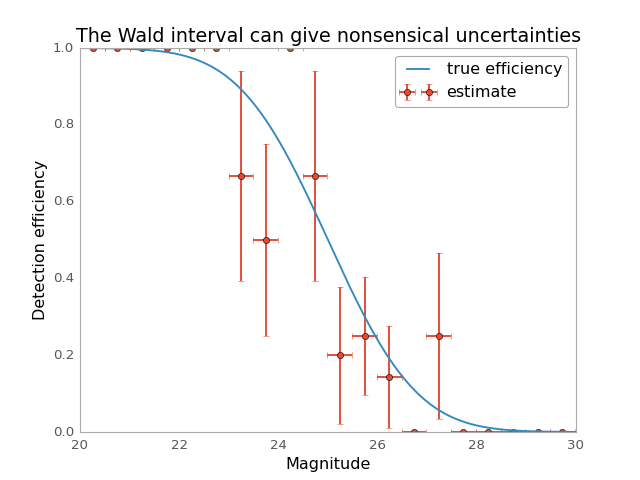

binned_binom_proportion¶
-
astropy.stats.binned_binom_proportion(x, success, bins=10, range=None, conf=0.68269, interval='wilson') [edit on github][source]¶ Binomial proportion and confidence interval in bins of a continuous variable
x.Given a set of datapoint pairs where the
xvalues are continuously distributed and thesuccessvalues are binomial (“success / failure” or “true / false”), place the pairs into bins according toxvalue and calculate the binomial proportion (fraction of successes) and confidence interval in each bin.Parameters: x : list_like
Values.
success : list_like (bool)
bins : int or sequence of scalars, optional
If bins is an int, it defines the number of equal-width bins in the given range (10, by default). If bins is a sequence, it defines the bin edges, including the rightmost edge, allowing for non-uniform bin widths (in this case, ‘range’ is ignored).
range : (float, float), optional
The lower and upper range of the bins. If
None(default), the range is set to(x.min(), x.max()). Values outside the range are ignored.conf : float in [0, 1], optional
Desired probability content in the confidence interval
(p - perr[0], p + perr[1])in each bin. Default is 0.68269.interval : {‘wilson’, ‘jeffreys’, ‘flat’, ‘wald’}, optional
Formula used to calculate confidence interval on the binomial proportion in each bin. See
binom_conf_intervalfor definition of the intervals. The ‘wilson’, ‘jeffreys’, and ‘flat’ intervals generally give similar results. ‘wilson’ should be somewhat faster, while ‘jeffreys’ and ‘flat’ are marginally superior, but differ in the assumed prior. The ‘wald’ interval is generally not recommended. It is provided for comparison purposes. Default is ‘wilson’.Returns: bin_ctr : numpy.ndarray
Central value of bins. Bins without any entries are not returned.
bin_halfwidth : numpy.ndarray
Half-width of each bin such that
bin_ctr - bin_halfwidthandbin_ctr + bins_halfwidthgive the left and right side of each bin, respectively.p : numpy.ndarray
Efficiency in each bin.
perr : numpy.ndarray
2-d array of shape (2, len(p)) representing the upper and lower uncertainty on p in each bin.
See also
binom_conf_interval- Function used to estimate confidence interval in each bin.
Examples
Suppose we wish to estimate the efficiency of a survey in detecting astronomical sources as a function of magnitude (i.e., the probability of detecting a source given its magnitude). In a realistic case, we might prepare a large number of sources with randomly selected magnitudes, inject them into simulated images, and then record which were detected at the end of the reduction pipeline. As a toy example, we generate 100 data points with randomly selected magnitudes between 20 and 30 and “observe” them with a known detection function (here, the error function, with 50% detection probability at magnitude 25):
>>> from scipy.special import erf >>> from scipy.stats.distributions import binom >>> def true_efficiency(x): ... return 0.5 - 0.5 * erf((x - 25.) / 2.) >>> mag = 20. + 10. * np.random.rand(100) >>> detected = binom.rvs(1, true_efficiency(mag)) >>> bins, binshw, p, perr = binned_binom_proportion(mag, detected, bins=20) >>> plt.errorbar(bins, p, xerr=binshw, yerr=perr, ls='none', marker='o', ... label='estimate')
(Source code, png, hires.png, pdf)

The above example uses the Wilson confidence interval to calculate the uncertainty
perrin each bin (see the definition of various confidence intervals inbinom_conf_interval). A commonly used alternative is the Wald interval. However, the Wald interval can give nonsensical uncertainties when the efficiency is near 0 or 1, and is therefore not recommended. As an illustration, the following example shows the same data as above but uses the Wald interval rather than the Wilson interval to calculateperr:>>> bins, binshw, p, perr = binned_binom_proportion(mag, detected, bins=20, ... interval='wald') >>> plt.errorbar(bins, p, xerr=binshw, yerr=perr, ls='none', marker='o', ... label='estimate')
(Source code, png, hires.png, pdf)

{kind=link}
{kind=link}
{kind=link}
{kind=link}